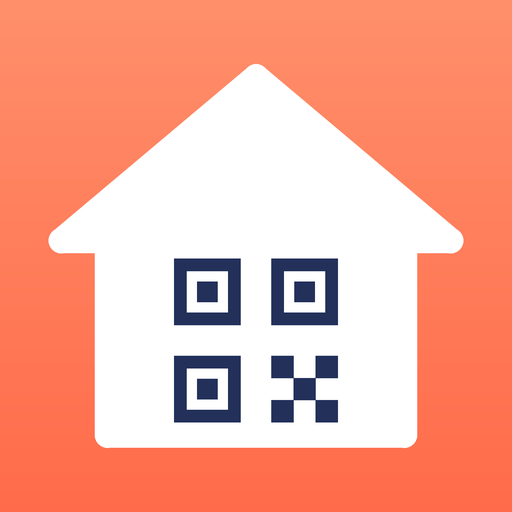

Badge Crèche
Le QR code de la badgeuse de votre crèche dans Apple Wallet, affiché automatiquement quand vous arrivez.
- Scannez le QR code remis par la crèche en début d'année (ou importez une photo, une capture d'écran ou un PDF).
- Indiquez l'adresse de la crèche : le badge apparaîtra sur l'écran verrouillé à proximité.
- Ajoutez-le à Apple Wallet. Le nom de l'enfant et celui de la crèche sont facultatifs.
Vos données restent chez vous
Aucun compte, aucun serveur, aucune publicité. Le badge est créé et signé directement sur votre iPhone ; l'APPC ne reçoit aucune information. Politique de confidentialité.
Une initiative de l'APPC
Badge Crèche est proposée gratuitement par l'association Parents à Paris Centre (APPC). Vous êtes parent à Paris Centre ? Rejoignez notre communauté pour échanger, vous entraider et suivre nos actions.
Rejoindre la communauté WhatsApp
Aide
Le badge ne s'affiche pas à l'approche de la crèche ? Vérifiez que le Service de localisation est activé et que l'option « Suggérer sur l'écran verrouillé » est active au dos du pass dans Wallet. Vous pouvez toujours l'ouvrir en double-cliquant sur le bouton latéral.
La badgeuse ne lit pas le QR code ? Augmentez la luminosité et présentez l'écran bien à plat. Gardez votre badge d'origine en secours.
Une question, un problème ? Écrivez-nous sur la communauté WhatsApp de l'APPC ou ouvrez un ticket sur GitHub.